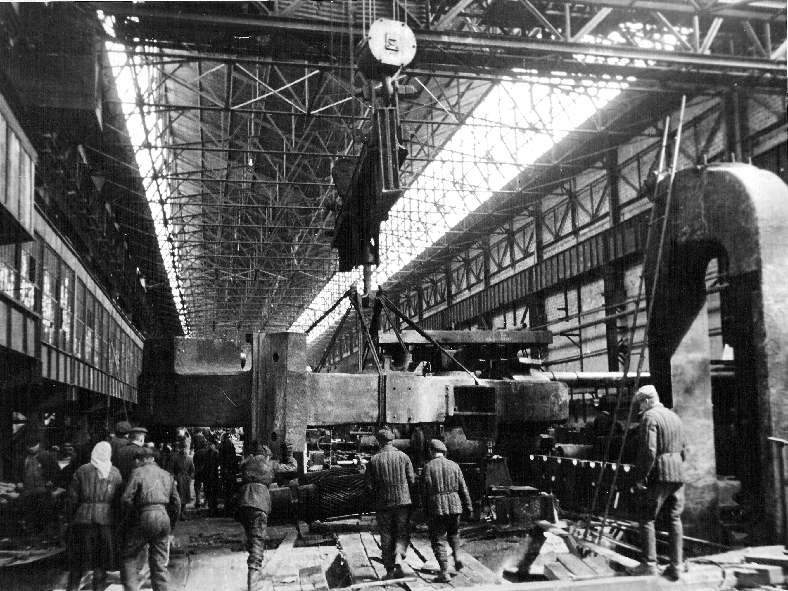

Украина оказалась в эпицентре военного вторжения с первых дней войны. На её территории до оккупации находилось более 31 тысячи промышленных предприятий, десятки шахт, крупнейшие металлургические комбинаты. Эвакуация здесь проходила в условиях непрерывных бомбёжек, стремительного наступления вермахта и катастрофической нехватки времени. По данным Г.А. Куманева, из Приднепровья и Крыма только с 7 по 31 августа 1941 года отправили 54 000 вагонов с оборудованием и людьми.
Из Запорожья в отдельные дни уходило по 800–900 вагонов с оборудованием заводов «Запорожсталь», «Днепроспецсталь» и других. Из Харькова эвакуировали 45 крупных предприятий и 24,5 тыс. работников. Однако Донбасс постигла трагедия: решение об эвакуации приняли лишь 9 октября 1941 года, когда враг уже вёл бои на его территории. Из Мариуполя оборудование начали вывозить 6 октября, а 8-го город захватили — вывоз был сорван. Многие заводы, шахты, электростанции остались врагу.
Ниже — ключевые цифры, хроника, фотографии и интерактивные блоки, раскрывающие масштаб и драматизм эвакуации из Украины.
Цифры и факты: эвакуация из Украины
Эвакуация в Украине началась в первые дни войны. 4 июля 1941 года ЦК КП(б)У издал директиву об уничтожении всего, что нельзя вывезти. Особенно напряжённо работали железнодорожники: из Приднепровья и Крыма с 7 по 31 августа отправили 54 000 вагонов. Из Запорожья в отдельные дни уходило по 800–900 вагонов с оборудованием заводов «Запорожсталь», «Днепроспецсталь», алюминиевого комбината и других. К началу октября вывоз был завершён.
Особо трагичной оказалась судьба Донбасса. Решение об эвакуации предприятий угольной и металлургической промышленности было принято только 9 октября 1941 года, когда немецкие войска уже подходили к Донецку. Из Мариуполя оборудование начали вывозить 6 октября, но 8 октября город был захвачен. Многие заводы, шахты, электростанции попали в руки врага или были уничтожены при отступлении.
Фотогалерея: эвакуация из Украины



Интерактив: хроника регионов
Эвакуация из Приднепровья и Запорожья
- Запорожье: в конце августа 1941 года ежедневно отправлялось до 800–900 вагонов с оборудованием «Запорожстали», «Днепроспецстали», алюминиевого и ферросплавного заводов.
- Днепропетровск: эвакуированы завод им. Петровского, вагоностроительный, металлургический комбинат им. Коминтерна. Вывоз шёл под артиллерийскими обстрелами.
- Кривой Рог: рудники и горно-обогатительные комбинаты частично вывезены, но значительная часть осталась врагу.
- Никополь: марганцевые рудники успели взорвать, но эвакуировать оборудование не удалось.
- Всего из Приднепровья и Крыма за август 1941 года вывезли 54 000 вагонов с грузами и людьми.
Почему не удалось спасти Донбасс
- Решение об эвакуации предприятий Донбасса было принято только 9 октября 1941 года — слишком поздно.
- Немецкие войска уже вели бои на подступах к Донецку (Сталино), Луганску (Ворошиловграде), Мариуполю.
- Из Мариуполя оборудование начали вывозить 6 октября, но 8 октября город был захвачен. Вывоз сорван.
- Крупнейшие заводы (Донецкий металлургический, Краматорский завод тяжёлого станкостроения, Луганский паровозостроительный) эвакуировать не успели.
- В результате Донбасс был оккупирован почти полностью, его промышленность была разрушена или использована врагом.
- Потери угольной промышленности оказались катастрофическими — восстановление заняло годы после войны.
Значение украинской эвакуации для Победы
Несмотря на потери, эвакуация из Украины позволила сохранить основу промышленного потенциала. «Запорожсталь» была восстановлена в Магнитогорске и Кузнецке, харьковские заводы дали тысячи танков и авиадвигателей, днепропетровское оборудование заработало на Урале. Вывезенные квалифицированные кадры стали костяком оборонной промышленности.
По разным оценкам, удалось спасти от 30 до 40% промышленных мощностей Украины. Эвакуировано было более 1,5 миллиона человек (включая беженцев). Многие из них впоследствии вернулись, другие остались на новых местах, внося вклад в победу.